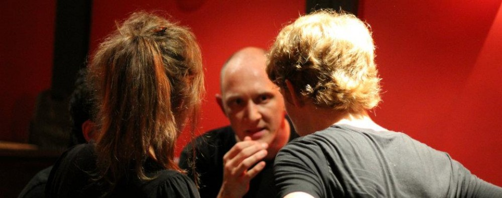

Au 3 arts, 21 rue des rigoles, 75020 Paris M Jourdain
1h30 de spectacle vivant durant lesquelles 5 comédiens improviseront devant vous sur les thèmes que vous allez écrire.
Entrée libre, avec conso.
Quesapelorio est une troupe d’improvisation théâtrale à Paris qui fait des Cabarets d'impro festifs, explosifs et survoltés tous les 4èmes jeudis de chaque mois.
La légende raconte qu’il existait un homme du nom de Hugo qui, un soir de terrible orage, mis au monde 5 bêtes étranges aux dialogues tordus et à l’esprit lointain.
Il nomma ses enfants Quesapelorio. Ces derniers, pour lui faire plaisir, montèrent une troupe d’improvisation théâtrale.
21 rue des Rigoles, 75020 Paris
M Jourdain
les3arts.free.fr
Un cabaret d'improvisation c'est à chaque fois drôle, étonnant, émouvant, époustouflant. Emmenez avec vous des idées de thèmes à jouer et votre mauvaise humeur, on va s'en occuper.
